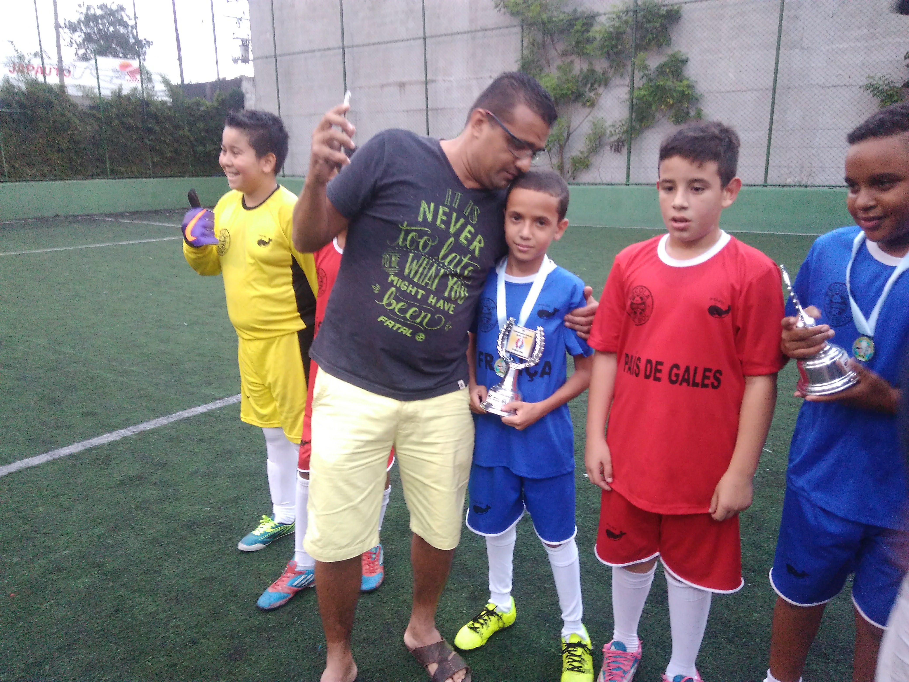
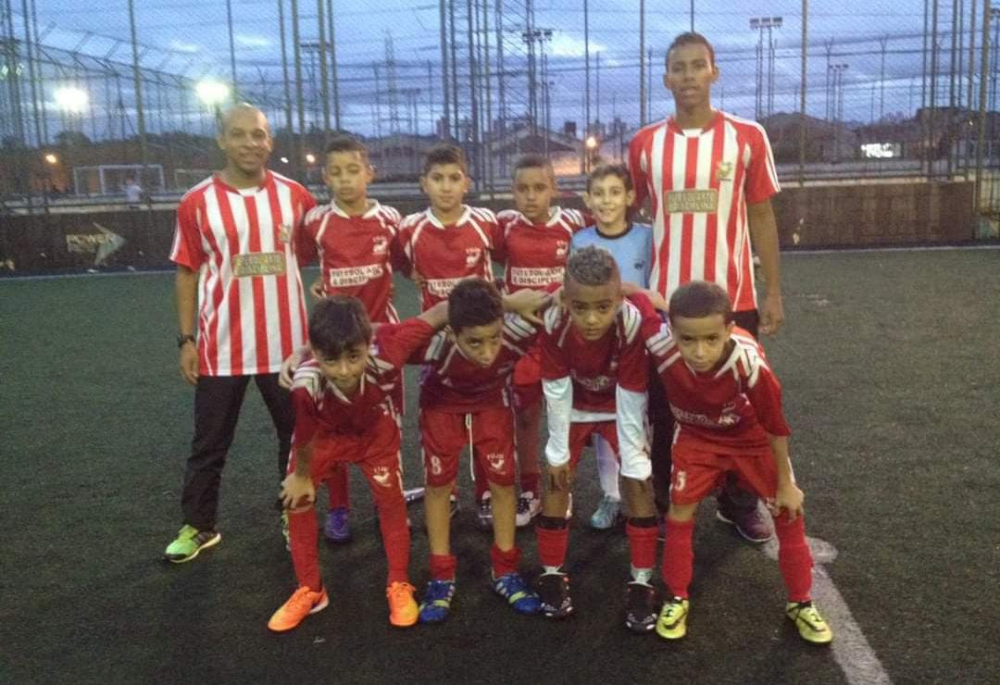
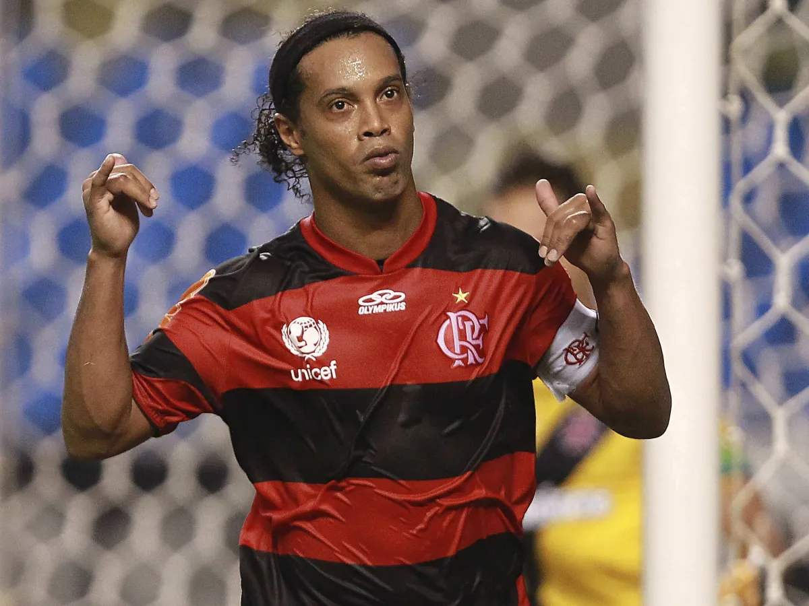
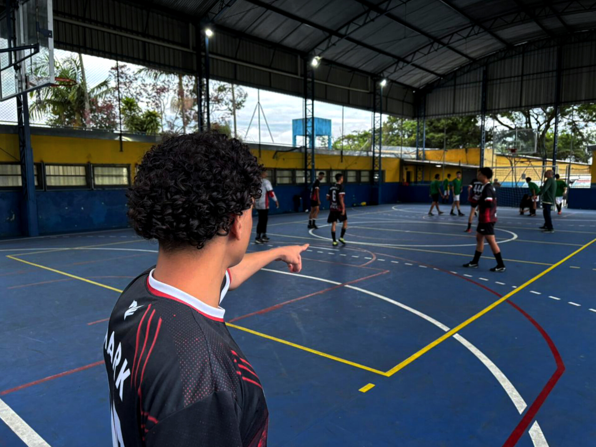

Onde tudo começou
Minha paixão pelo futebol começou ainda na infância, quando esse esporte passou a fazer parte da minha vida. Desde pequeno, tive o apoio da minha família, principalmente do meu pai, que teve um papel muito importante nessa história.
Aos poucos, o futebol deixou de ser apenas um jogo e se tornou algo especial para mim, criando lembranças que levo comigo até hoje.

Onde a paixão aumentou
Comecei a fazer escolinha de futebol na Fujii em 2016, e foi lá que minha paixão pelo esporte cresceu cada vez mais. Durante essa fase, aprendi coisas novas, fiz amizades e tive a oportunidade de melhorar minhas habilidades dentro de campo.
Eu gostava muito de participar dos treinos, jogar com os amigos e aproveitar cada momento, o que me fez gostar ainda mais do futebol.

Meu time do coração
Meu time do coração é o Flamengo. Essa paixão começou ainda na infância, também muito influenciada pelo meu pai, que teve um papel importante nessa escolha. Outra grande lembrança dessa época foi acompanhar Ronaldinho Gaúcho jogando, um jogador que sempre chamou minha atenção pelo seu talento e pela maneira de jogar.
Essas influências fizeram com que eu criasse uma ligação especial com o Flamengo, tornando o clube parte da minha história desde pequeno.

Futebol de Várzea
Em 2023, tive a oportunidade de jogar futsal pelo time chamado Mó Várzea. Foi uma experiência muito legal, pois pude conhecer melhor o futebol fora do ambiente escolar e ganhar muita experiência dentro de quadra.
Essa passagem pelo time foi importante para minha trajetória, porque me permitiu viver o futebol de uma maneira diferente, ganhando experiência dentro de campo e criando lembranças que fazem parte da minha história com esse esporte.